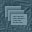

|
|||
| [doku] [aktuell] [literatur] [links] |

| ||
| |||
|
Zu einer Kurzintervention erhält zunächst der Abgeordnete
Volker Beck das Wort.
(Joseph Fischer [Frankfurt] [BÜNDNIS 90/DIE GRÜNEN]: Frau Präsidentin, Kollege Schäuble fordert einen Ordnungsruf und will eine Sondersitzung des Ältestenrates machen!) Volker Beck (Köln) (BÜNDNIS 90/DIE GRÜNEN): Herr Kollege Dregger, ich fand die Rede, die Sie hier gehalten haben, wirklich bestürzend. Sie haben in Ihrer Rede die Verantwortung der Deutschen für die grauenhaften Verbrechen im Zweiten Weltkrieg und im Dritten Reich zurückgewiesen. Sie haben die Propagandalüge von der Pauschalverurteilung der Wehrmachtsdeserteure wiederholt. Mit dieser These versucht man Raum zu schaffen für die Žußerungen von Gauweiler, von Frau Steinbach und ihren Freunden in den rechtsextremistischen Parteien. (Beifall beim BÜNDNIS 90/DIE GRÜNEN und bei der PDS sowie bei Abgeordneten der SPD) Auf der ersten Tafel am Eingang der Ausstellung -- wenn Sie sie denn einmal ansehen würden --, wird ausdrücklich erwähnt, daß ihr Ziel keine Pauschalverurteilung aller Wehrmachtssoldaten ist. Diese Ausstellung bricht allerdings unwiderruflich mit der Mär, der Legende -- die in diesem Volk, in dieser Republik lange en vogue war -- von der sauberen Wehrmacht, von dem sauberen Krieg an der Ostfront. Sie zeigt, daß der Befehlsebene klar war -- das belegen Anweisungen an die Militärgerichtsbarkeit im Rahmen des Barbarossa-Feldzuges und der Kommissarbefehl --, daß systematisch internationales Kriegsrecht gebrochen werden sollte. (Vorsitz: Vizepräsident Hans-Ulrich Klose) Die Deutschen haben Hitler an die Macht verholfen. Die Nazis kamen nicht wie braune Marsmenschen vom Himmel. Wir haben hier als Volk Verantwortung und Schuld auf uns geladen, zu der man sich auch bekennen muß. (Beifall beim BÜNDNIS 90/DIE GRÜNEN und bei der PDS -- Zurufe von der CDU/CSU) -- Ich setze mich hier nicht, solange ich das Wort habe. Sie können auch nicht leugnen, daß die deutsche Wehrmacht einen verbrecherischen Angriffs- und Vernichtungskrieg im Osten geführt hat und daß objektiv der deutsche Wehrmachtssoldat auf der falschen Seite gekämpft hat. Ich finde es eine Schande, daß diejenigen, die die Waffen weggeworfen haben, die desertiert sind und diesen schmutzigen Krieg nicht mehr mit geführt haben, rechtlich immer noch als Kriminelle behandelt werden. (Beifall beim BÜNDNIS 90/DIE GRÜNEN sowie bei Abgeordneten der SPD und der PDS) Damit muß endlich Schluß sein. Sie wehren sich auch dabei mit dem absurden Argument, eine eindeutige Rehabilitierung der Wehrmachtsdeserteure käme einer Pauschalverurteilung aller Wehrmachtssoldaten gleich. Man kann nicht leugnen, daß Einheiten der Wehrmacht auf obersten Befehl an massenhaften Verbrechen im Osten beteiligt waren. Millionen von Menschen mußten außerhalb von kriegerischen Handlungen sterben, weil die Wehrmacht Zivilbevölkerung erschossen, sich selbst am Judenmord beteiligt hat, Kriegsgefangene verhungern ließ und feige ermordet hat. Zu all diesen Verbrechen haben Sie in Ihrer Rede geschwiegen und die Verantwortung und die Schuld in dieser historischen Epoche kleingeredet. Deshalb finde ich diese Rede eine Schande für dieses Parlament. (Beifall beim BÜNDNIS 90/DIE GRÜNEN sowie bei Abgeordneten der SPD und der PDS) Vizepräsident Hans-Ulrich Klose: Ich frage zunächst ganz formell: Wird Gegenrede gewünscht, Herr Kollege Dregger? Dr. Alfred Dregger (CDU/CSU): Nein. Vizepräsident Hans-Ulrich Klose: Ich habe jetzt, verehrte Kolleginnen und Kollegen, noch zwei weitere Anmeldungen für Kurzinterventionen. Ich werde sie aber erst am Ende der ersten Runde zulassen, weil ich finde, es ist angemessener, wenn zunächst einmal alle Fraktionen zu Wort kommen. (Beifall bei der SPD sowie bei Abgeordneten der F.D.P.) Das betrifft jetzt den Kollegen Duve und die Kollegin Christa Nickels. Ich bitte um Verständnis, daß Sie erst am Ende der ersten Runde sprechen können. | |||
© Birgit Pauli-Haack 1997 - 1999